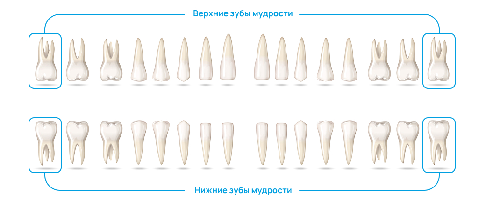
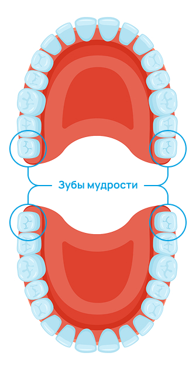

Абдурахманов Дилшод Алишерович
Врач — стоматолог общей практики, гигиенист
Это серьезная процедура, к которой стоматологи прибегают только в крайних случаях. Мы стремимся сохранить зубы с помощью современных методов лечения, однако иногда удаление становится необходимым шагом. Узнайте больше о показаниях и противопоказаниях к удалению зубов, а также о процессе и восстановлении после процедуры.
Это серьезная процедура, к которой стоматологи прибегают только в крайних случаях. Мы стремимся сохранить зубы с помощью современных методов лечения, однако иногда удаление становится необходимым шагом. Узнайте больше о показаниях и противопоказаниях к удалению зубов, а также о процессе и восстановлении после процедуры.
Удаление зуба — это крайняя мера, к которой стоматологи прибегают только когда восстановить зуб невозможно или его сохранение представляет угрозу для здоровья пациента. В современной стоматологии приоритетом является сохранение естественных зубов любыми доступными способами: лечением кариеса, установкой пломб, коронок и проведением эндодонтической терапии.
Тем не менее существуют ситуации, когда от удаления нельзя отказаться. Это может быть связано с обширным разрушением тканей зуба, его нестабильным положением, воспалительными процессами или осложнениями ортодонтического лечения. Важно понимать: даже если зуб выглядит относительно здоровым, внутренние процессы (например, киста или хроническое воспаление) могут потребовать удаления. Только после полноценной диагностики врач принимает окончательное решение, ориентируясь на безопасность и долгосрочную перспективу здоровья полости рта.
Показания к удалению зуба включают широкий спектр заболеваний и патологий. Среди них — глубокое разрушение зубных тканей, невозможность эффективного протезирования, корневая трещина, обострение хронических инфекций, а также развитие заболеваний тканей пародонта.
Удаление также рекомендуется при неправильном положении зубов, которое мешает формированию правильного прикуса или затрудняет ортодонтическое лечение.
Противопоказания могут быть как временными, так и постоянными. К временным относятся острые вирусные или бактериальные инфекции, острые воспалительные процессы в области удаления, беременность на ранних или поздних сроках, обострение хронических соматических заболеваний. Абсолютные противопоказания включают тяжёлые нарушения свертываемости крови, нестабильные состояния сердечно-сосудистой системы и ряд онкологических патологий. В таких случаях решение о целесообразности вмешательства принимается совместно с врачами других специализаций
Зубы мудрости («восьмёрки») — источник множества стоматологических проблем. Их прорезывание часто сопровождается воспалением, болью, отёком десны и повреждением соседних зубов. Нередки случаи, когда зуб мудрости остаётся полностью или частично ретинированным, то есть не может прорезаться через десну и остаётся в костной ткани.
 Удаление зуба мудрости рекомендуется при перикоронарите, кариесе восьмого зуба или соседнего моляра, образовании кисты, хронических воспалениях. Также его проводят в рамках подготовки к ортодонтическому лечению для предотвращения скученности зубов. Операция может быть простой, если зуб расположен удобно, или сложной — с разрезами тканей, выпиливанием кости и последующим наложением швов. В любом случае перед удалением обязательна тщательная диагностика: рентгенография или 3D-КТ.
Удаление зуба — это контролируемая хирургическая процедура, требующая соблюдения определённой последовательности действий:
Включает осмотр, сбор анамнеза и проведение снимков, чтобы определить форму корней, особенности расположения зуба и риски для окружающих тканей.
Врач выясняет наличие противопоказаний, информирует пациента о ходе операции, обсуждает возможные осложнения и рекомендации на период восстановления.
Используется местная анестезия, которая надёжно обезболивает зону вмешательства. В сложных случаях возможно применение седации.
Врач расшатывает зуб, удаляет его щипцами или элеватором. При сложном удалении проводится распил корней и разрез десны.
Выполняется очистка лунки, остановка кровотечения, наложение швов при необходимости и назначение антисептических средств для дальнейшего ухода.
Правильное соблюдение всех этапов помогает минимизировать риск осложнений и ускорить восстановление.
Период после удаления зуба требует внимательного соблюдения рекомендаций стоматолога. В первые два-три часа после процедуры следует воздержаться от приёма пищи и напитков. В течение первых суток запрещается полоскать рот, употреблять горячее, курить и трогать рану языком или пальцами.
Чтобы уменьшить отёк, рекомендуется прикладывать холод к щеке снаружи короткими интервалами (10–15 минут с перерывами). При боли можно использовать назначенные врачом обезболивающие препараты. Если стоматолог прописал антибиотики, важно строго соблюдать схему приёма, не пропуская дозировки.
На вторые сутки можно аккуратно полоскать рот раствором хлоргексидина или другими рекомендованными антисептиками. Нагрузки на организм — спорт, поднятие тяжестей — стоит ограничить минимум на 2–3 дня. Полное заживление лунки обычно занимает от одной до двух недель, в зависимости от сложности удаления и общего состояния здоровья пациента.
При появлении признаков осложнений (усиление боли, гнойные выделения, высокая температура) необходимо срочно обратиться за медицинской помощью.
Врач — стоматолог общей практики, гигиенист
Врач — стоматолог общей практики, гигиенист
Врач — стоматолог общей практики, гигиенист
Врач — стоматолог общей практики, гигиенист
Врач — стоматолог общей практики, гигиенист
Врач — стоматолог общей практики, гигиенист
Врач — стоматолог общей практики, гигиенист
Врач — стоматолог общей практики, гигиенист
Врач — стоматолог общей практики, гигиенист

ООО ДИАМАНТ © 2019.
Все права защищены.
Бесплатная линия:
8 (800) 555-36-15